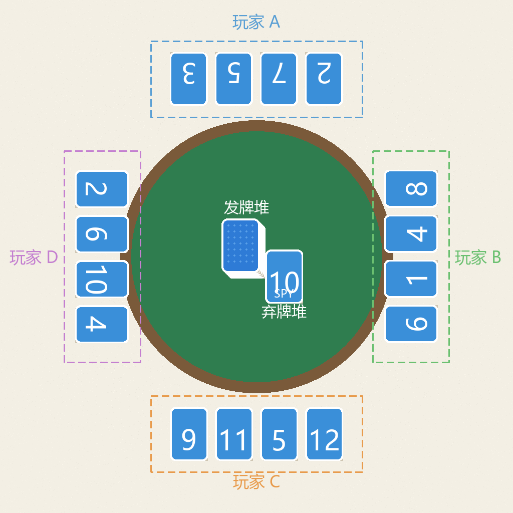

📷 OCR 试验室
v1① 选择照片
简化版用法：拍完拖动框选圈住单个数字块（避开卡面插画），识别最准。朝向任意都行——算法会自动把数字转正。卡牌是白字彩底也没问题。
没图也能先点示例图自检：它会生成一张深底白字的单数字卡，正确结果应是 7，用来验证整条链路。
📐 拍法参考（框选每人的单块数字，朝向任意）

📷 拍照自动录入分数【手动框选版 · 已可用】
拍摄记分卡牌后手动框选单个数字块（朝向任意均可，算法自动转正），AI 识别纯数字并录入对应玩家。已支持白字彩底卡牌、10/11/12/13 多位数与任意朝向。
已知限制：6 与 9 仅靠卡面横线区分，偶会混淆，低置信度时会提示人工核对（见下方「手动修正」）。
下一步（规划中）：半自动「整桌识别」——你点 4 个桌角（或自动检测桌子），自动透视矫正并按 4×4 网格切出 16 张牌，逐张提取数字 → 一次性填好 4 名玩家的分，只需核对个别低置信度项。